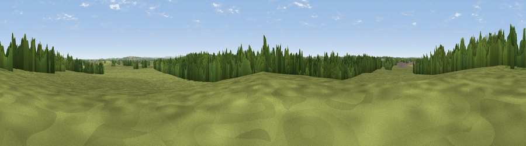

Bury Hill
#36243 in England · top 63% of its area beats it · near LeighThe view, rendered

A 360° render of this exact spot computed from the terrain model, tree cover and land cover — summer colours, afternoon light, calibrated against photographs of famous viewpoints. Real trees, hedges and buildings will differ in detail.
The panorama
Grey silhouette: terrain skyline in each direction (720 bearings, Earth curvature and refraction included). Dashed green: skyline with trees (+15 m) and buildings (+8 m) as obstacles. Blue strip: how far the ground is visible on each bearing.
Where the view opens
Wedge length = distance to the farthest visible ground on that bearing (vegetation-aware). Rings at 10, 25 and 50 km.
What fills the view
71% grassland · 20% woodland · 6% cropland · 3% built-up
Angular shares of the visible panorama (visual magnitude), not map area. Landscape diversity 0.37 (0–1 Shannon).
Key numbers
More beautiful places nearby
The staircase of upgrades: each row has a higher view potential than everything closer. Driving times are estimates from straight-line distance, calibrated against real road routing — check an actual route before setting out.
| Place | Direction | Drive | Score |
|---|---|---|---|
| Cox Hill | N · 0 km | ~1 min | 37.7 |
| Viewpoint near Purton | SE · 3 km | ~7 min | 51.6 |
| Hook Hill | SSE · 5 km | ~12 min | 51.9 |
| Viewpoint near Tockenham | SSW · 9 km | ~18 min | 53.9 |
| Viewpoint near Broad Town | SSE · 12 km | ~22 min | 65.8 |
| Viewpoint near Broad Town | SSE · 12 km | ~23 min | 66.9 |
| Viewpoint near Liddington | SE · 18 km | ~32 min | 73.4 |
| Viewpoint near Liddington | ESE · 19 km | ~32 min | 74.4 |
51.60990, -1.91801 · source: osm peak · position refined by local search. Computed location — check access rights before visiting.